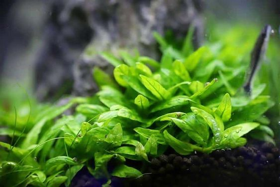
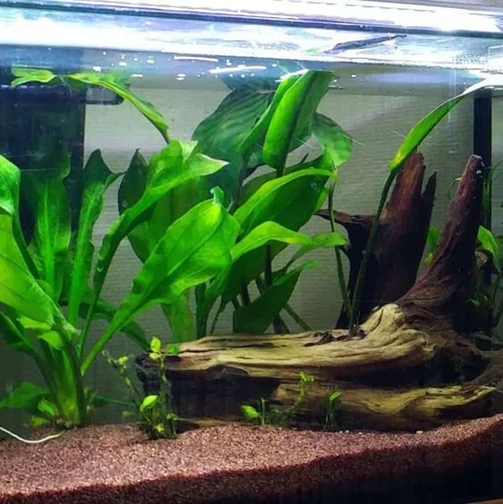
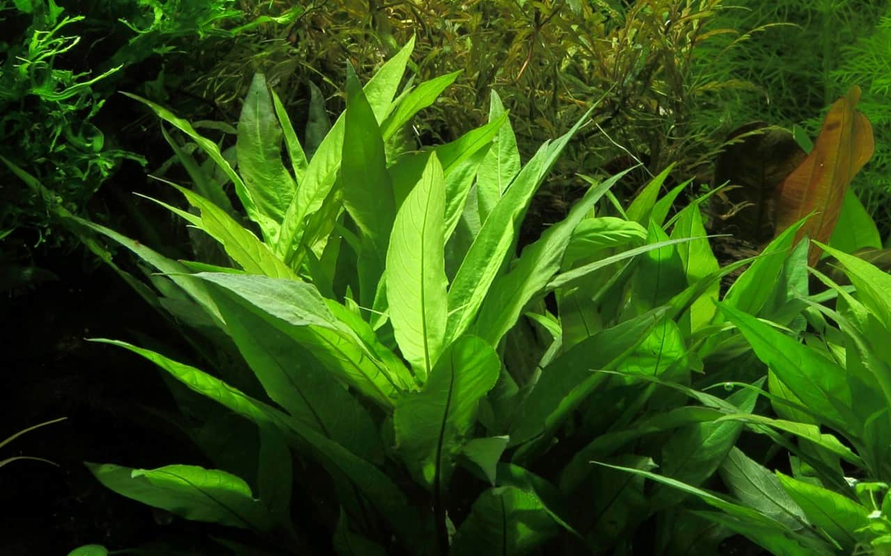

Decoration > Biomaterials > Large Aquarium Water Plants
Large Aquarium Water Plants

| Staurogyne | |
|---|---|
| Attachment | Rooted in substrate |
| Placement | Foreground |
| Substrate Type | Fine Gravel or Coarse Sand |
| Aqueon Light | OptiBright LED Light or Deluxe LED Full Hood |
| Fertilizer | Aqueon Plant Food or Root Tablets |
| Amazon Sword | |
|---|---|
| Attachment | Rooted in substrate |
| Placement | Midground |
| Substrate Type | Fine Gravel or Coarse Sand |
| Aqueon Light | OptiBright LED Light or Deluxe LED Full Hood |
| Fertilizer | Aqueon Plant Food or Root Tablets |


| Giant Hygro | |
|---|---|
| Attachment | Rooted in substrate |
| Placement | Midground to background |
| Substrate Type | Fine Gravel or Coarse Sand |
| Aqueon Light | OptiBright LED Light or Deluxe LED Full Hood |
| Fertilizer | Aqueon Plant Food |